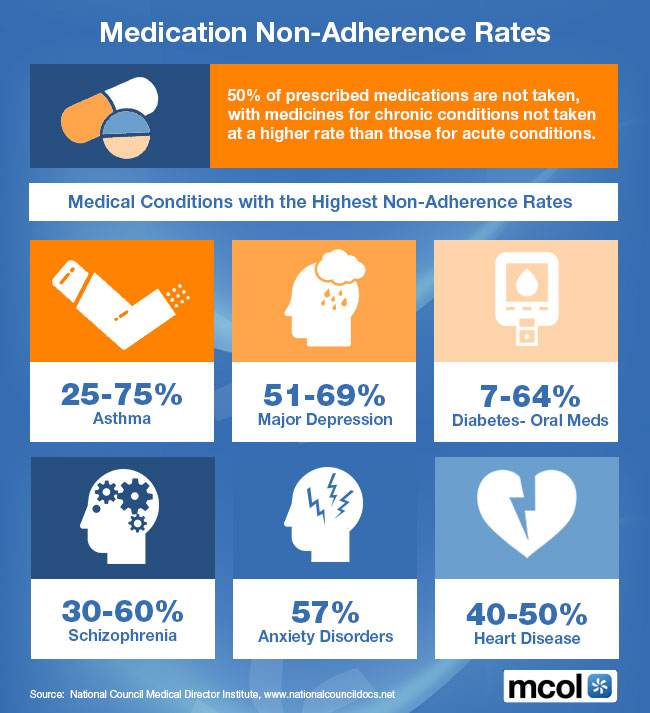
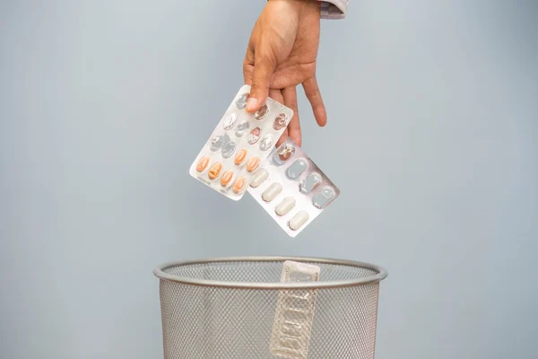
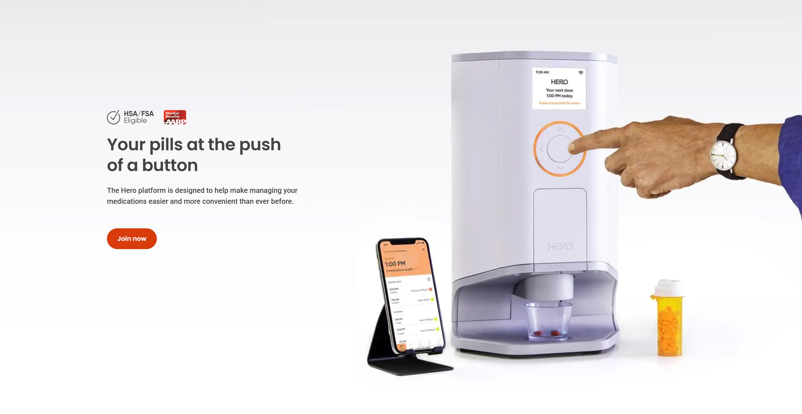

Why young adults stop taking their meds.
Medical nonadherence is a quiet crisis — one that costs the U.S. healthcare system billions annually and disproportionately affects the people we'd least expect: young adults.

Problem Definition
The problem we chose to tackle is that of low medication adherence among young adults in the United States. According to the World Health Organization, roughly 50% of young adults do not adhere to long-term prescriptions, this means they either don't take the medication regularly, or stop taking it altogether. This lack of adherence carries significant consequences such as more health complications, increased healthcare costs, and even rehospitilizations. Young adults are cognitively capable of adherence (hence avoiding these consequences), the true underlying reason for the low adherence is the tedium of long-term medication management discouraging them.
Problem Motivation

Our team's motivation for tackling this problem stems from personal experience — watching family members struggle with medication management.
We've seen firsthand how the tedium of managing medications leads to missed doses, health complications, and, in some cases, a complete refusal to take medication. The problem isn't a lack of willpower or intelligence. It's a design problem — and we believe it can be solved with the right combination of hardware, software, and human psychology.
What's already on the market.
A handful of smart pillboxes exist today. The most prominent is the Hero Smart Pillbox — the closest current analog to what we're proposing.

Hero Smart Pillbox
Strengths
- Dispenses medication in a more organized and accessible way.
- Provides reminder support through a connected mobile app.
- Works well for convenience and routine daily reminders.
Limitations
- Does not fully alleviate the tedium of long-term medication management.
- Still leaves users responsible for refilling, organizing, and monitoring medications over time.
- Not portable — users must manage medications manually when away from home.